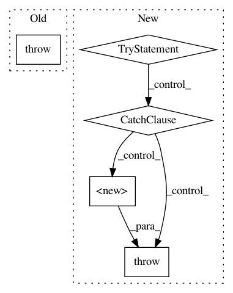

1c0a56060278fa9c0601e4d5eceeff39573a05a9,niftynet/engine/sampler_weighted.py,,weighted_spatial_coordinates,#Any#Any#Any#Any#Any#,46
Before Change
smaller window sizes (the output windows are concentric).
if data is None or data.get("sampler", None) is None:
raise tf.logging.fatal("input weight map not found. please check"
"the configuration file")
n_samples = max(n_samples, 1)
uniq_spatial_size = set([img_size[:N_SPATIAL]
for img_size in list(img_sizes.values())])
if len(uniq_spatial_size) > 1:
After Change
// the window might be. If the centre of the window was outside of
// this crop area, the patch would be outside of the field of view
half_win = np.floor(max_spatial_win / 2).astype(int)
try:
cropped_map = data["sampler"][
half_win[0]:-half_win[0] if max_spatial_win[0] > 1 else 1,
half_win[1]:-half_win[1] if max_spatial_win[1] > 1 else 1,
half_win[2]:-half_win[2] if max_spatial_win[2] > 1 else 1,
0, 0]
assert np.all(cropped_map.shape) > 0
except (IndexError, KeyError):
tf.logging.fatal("incompatible map: %s", data["sampler"].shape)
raise
except AssertionError:
tf.logging.fatal(
"incompatible window size for weighted sampler. "
"Please use smaller (fully-specified) spatial window sizes")
raise
// Get the cumulative sum of the normalised sorted intensities
// i.e. first sort the sampling frequencies, normalise them
// to sum to one, and then accumulate them in order
flatten_map = cropped_map.flatten()
sorted_data = np.cumsum(np.divide(np.sort(flatten_map), flatten_map.sum()))
// get the sorting indexes to that we can invert the sorting later on.
sorted_indexes = np.argsort(flatten_map)
In pattern: SUPERPATTERN
Frequency: 3
Non-data size: 5
Instances
Project Name: NifTK/NiftyNet
Commit Name: 1c0a56060278fa9c0601e4d5eceeff39573a05a9
Time: 2017-10-03
Author: wenqi.li@ucl.ac.uk
File Name: niftynet/engine/sampler_weighted.py
Class Name:
Method Name: weighted_spatial_coordinates
Project Name: NifTK/NiftyNet
Commit Name: 165207a79dafcf658f483d26ccffd9e982389dcc
Time: 2018-05-01
Author: wenqi.li@ucl.ac.uk
File Name: niftynet/io/image_reader.py
Class Name: ImageReader
Method Name: initialise
Project Name: NifTK/NiftyNet
Commit Name: 9db50ab9ed6bf6b4e462c84e2c38fedd36e7467a
Time: 2017-11-08
Author: wenqi.li@ucl.ac.uk
File Name: niftynet/io/image_sets_partitioner.py
Class Name: ImageSetsPartitioner
Method Name: randomly_split_dataset